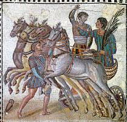

¡LO HAS LOGRADO!
"El tesoro está a salvo de las manos negras de los senadores corruptos. No es oro ni joyas lo que has encontrado, sino la memoria recuperada de un campeón de Barcino que nunca dejó de amar a su ciudad.
Has demostrado el valor de un auriga y la astucia de un cónsul. Ahora, mi legado vivirá para siempre gracias a tu ingenio. Mi historia ya no se perderá en las arenas del tiempo."
¿Quieres ver la prueba real de mi existencia?